R Console, in the 23-spatial-vector folder. Installs sf if missing
want <- c("sf")
need <- want[!(want %in% installed.packages()[,"Package"])]
if (length(need)) install.packages(need)
lapply(want, function(i) require(i, character.only = TRUE))Tuesday, November 17, 2026
Slides · Live script · Source · the project
A vector layer stores places as points, lines or polygons, each with a row of data. This session reads the Census Bureau’s county file into R with sf, joins it to points and to a table, and measures areas, lengths, distances and directions in a projection chosen for the job. It then relates places to each other: the nearest road, neighbouring counties, shortest routes, straight lines between cities, closeness in friendships, and standard errors that allow nearby places to be alike. Each operation comes with a published study that used it. The application counts the people under wildfire smoke on each day of June 2023, from NOAA’s daily maps of smoke, and checks the count against ground monitors. Two worked examples close the page: county pairs across the line between states that expanded Medicaid in 2014 and states that did not, and the distance from forest clearings in the Brazilian Amazon to the nearest mapped road.
The project. Download the zip on this page, unzip it and open 23-spatial-vector.Rproj, so that R starts in the project folder. Every path on the slides is relative to it. The scripts install sf, igraph, fixest and magick if they are missing. I downloaded every file before class, so nobody needs an account, a key or the network. The folder’s README.md says where each file came from and under what licence. Four large downloads stay out of the zip: the Census primary-roads file, the yearly health-insurance files, the EPA’s daily fine-particle file for 2023 and Meta’s county friendship file. tools/ holds the code that fetches them, and the small files made from them are in data_clean/.
By the end of this session you can:
sf and [, as on any data frame.merge(), st_join() and st_intersection().igraph, and standard errors that allow nearby places to be correlated.Left out: grids of cells such as satellite images, interactive web maps, turning addresses into coordinates, spatial regression models.
Today covers spatial data stored as points, lines and polygons. For each tool I show a published study that used it, then R code on a small example. Not covered: grids of cells such as satellite images, interactive web maps, turning addresses into coordinates, and spatial regression models.
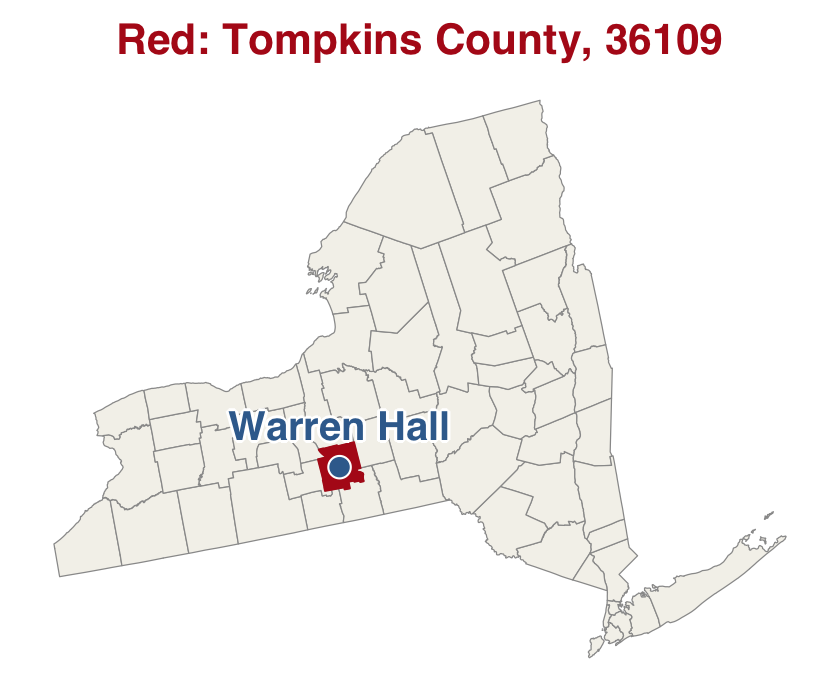
Later in this part: Warren Hall is in Tompkins County, code 36109.
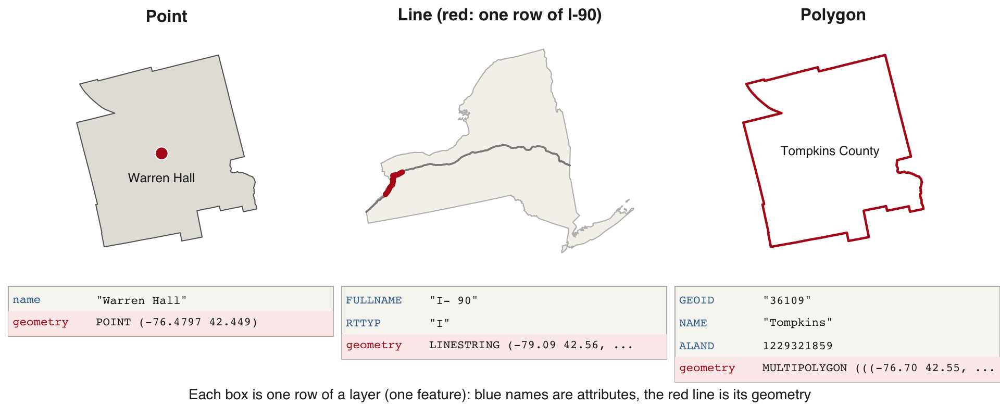
Warren Hall is the Cornell building that houses this course’s department, in Ithaca. Ithaca is in Tompkins County. A county is the level of government below the state. A MULTIPOLYGON can have several parts, such as a county with islands. Data: Census Bureau county and road files, 2024.
23-spatial-vector/, as its README.md describes it
data/census/ county and state outlines (cb_2024_us_*_500k.zip); county population, 2020-2024
data/noaa/hms/ NOAA's smoke outlines, one zip per day of June 2023
data_clean/ interstates_ny_box.gpkg: the Census Interstate lines near New York
sci_tompkins.csv: Facebook friendship links between Tompkins and every county
pm25_june2023.csv: EPA daily fine particles at 947 monitors, June 2023
data/inpe/, data/osm/, and the other files in data_clean/: the page's two worked examples
code/ 1_vector.R ... 4_smoke.R in lecture order; 5_medicaid.R, 6_amazon.R; run_everything.R
23-spatial-vector.R the live script: every code slide in order
tools/ what made data_clean/ from the full downloads before class (these need the network)NOAA is the US weather and ocean agency. Meta runs Facebook. A box is a rectangle that sets a map’s area. A .gpkg file holds one map layer. The scripts install sf, igraph, fixest and magick if needed. The README gives each file’s source and licence.
R Console, in the 23-spatial-vector folder. Installs sf if missing
want <- c("sf")
need <- want[!(want %in% installed.packages()[,"Package"])]
if (length(need)) install.packages(need)
lapply(want, function(i) require(i, character.only = TRUE))R Console, in the 23-spatial-vector folder; reads data/census/cb_2024_us_county_500k.zip
unzip("data/census/cb_2024_us_county_500k.zip", exdir = "data_clean/counties") # seven files
co <- st_read("data_clean/counties/cb_2024_us_county_500k.shp", quiet = TRUE)
print(co, n = 0) # the header alone, no rows
#> Simple feature collection with 3235 features and 12 fields
#> Geometry type: MULTIPOLYGON
#> Dimension: XY
#> Bounding box: xmin: -179.1467 ymin: -14.5487 xmax: 179.7785 ymax: 71.38782
#> Geodetic CRS: NAD83A shapefile is several files with the same name. The .shp file holds the shapes, .dbf the table and .prj the coordinate system. The bounding box is the smallest rectangle around all the counties. It runs from −179 to 180 because Alaska’s islands cross the 180th meridian. The coordinate system, NAD83, is in degrees of longitude and latitude.
unzip(..., list = TRUE) lists the seven files in the zip: the .shp (16.7 MB) holds the shapes, the .dbf (1.2 MB) the table, the .shx an index of the shapes, the .prj the coordinate system, the .cpg the text encoding, and two .xml files the documentation. st_read("/vsizip/data/census/cb_2024_us_county_500k.zip") reads the zip without unzipping it, through GDAL’s path syntax; this page unzips it so that the code is plain R.
R Console, in the 23-spatial-vector folder; co from the slide before
class(co)
#> [1] "sf" "data.frame"
co[1:3, c("GEOID", "NAME", "STUSPS", "ALAND")] # three rows, four columns: the geometry comes too
#> Simple feature collection with 3 features and 4 fields
#> Geometry type: MULTIPOLYGON
#> Dimension: XY
#> Bounding box: xmin: -88.47323 ymin: 30.99708 xmax: -84.88908 ymax: 32.51019
#> Geodetic CRS: NAD83
#> GEOID NAME STUSPS ALAND geometry
#> 1 01069 Houston AL 1501742250 MULTIPOLYGON (((-85.71209 3...
#> 2 01023 Choctaw AL 2365900084 MULTIPOLYGON (((-88.47323 3...
#> 3 01113 Russell AL 1660653961 MULTIPOLYGON (((-85.4347 32...GEOID is the county code: two digits for the state, then three for the county. Tompkins is 36109: New York is 36 and Tompkins is 109. Alabama’s codes start with 01, so the leading zero matters. STUSPS is the state’s two letters. ALAND and AWATER are land and water area in m². The file has 3,144 counties in the 50 states and DC, plus 91 rows for five territories.
R Console, in the 23-spatial-vector folder; co from the slides before
table(co$STUSPS[!co$STUSPS %in% c(state.abb, "DC")]) # AS American Samoa, GU Guam, MP Northern Mariana
#>
#> AS GU MP PR VI
#> 5 1 4 78 3
# Islands, PR Puerto Rico, VI US Virgin IslandsThe Census Bureau’s tally for 2020 was 3,143 counties and equivalents in the 50 states and DC. The 2024 file has 3,144 because Connecticut’s nine planning regions replaced its eight counties in 2022.
R Console, in the 23-spatial-vector folder; co from the slides before
ny <- co[co$STUSPS == "NY", ] # rows by a condition
nrow(ny)
#> [1] 62
tk <- ny[ny$NAME == "Tompkins", ] # Tompkins County, used again below
par(mar = c(0, 0, 0, 0))
plot(st_geometry(ny), col = ifelse(ny$NAME == "Tompkins", "#B31B1B", "grey90"), border = "white")
st_geometry() keeps only the shapes. plot() on the whole sf object would draw one map per column. Tompkins is in red.
R Console, in the 23-spatial-vector folder; tk from the slide before
xy <- st_coordinates(tk) # one row per corner
nrow(xy)
#> [1] 176
head(xy, 2)
#> X Y L1 L2 L3
#> [1,] -76.69666 42.54679 1 1 1
#> [2,] -76.68373 42.54712 1 1 1
plot(st_geometry(tk))
points(xy[, "X"], xy[, "Y"], pch = 20, cex = 0.5)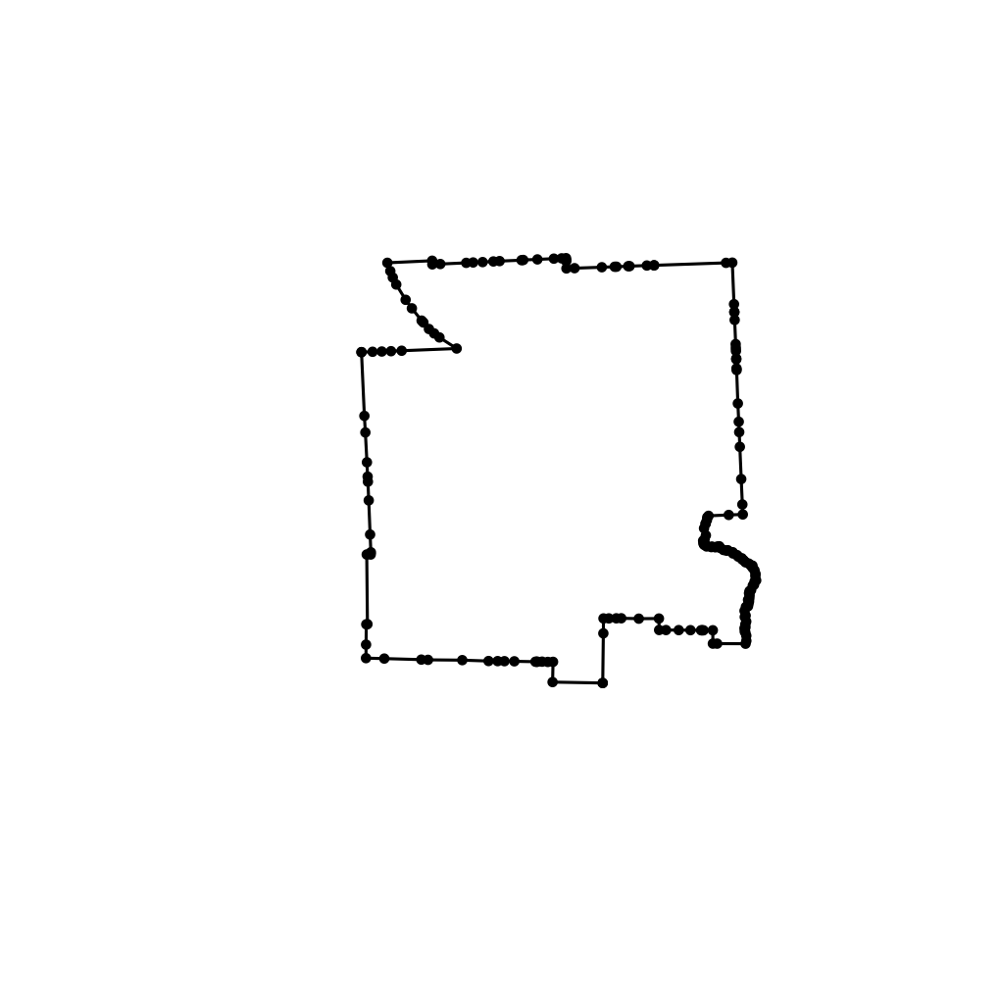
X is longitude and Y latitude. L1 numbers the ring (one closed outline; a hole would be a second ring), L2 the part and L3 the feature. 194 of the 3,235 counties have more than one part; Monroe County, Florida, the Keys, has 96. A line is stored the same way, without the closing corner.
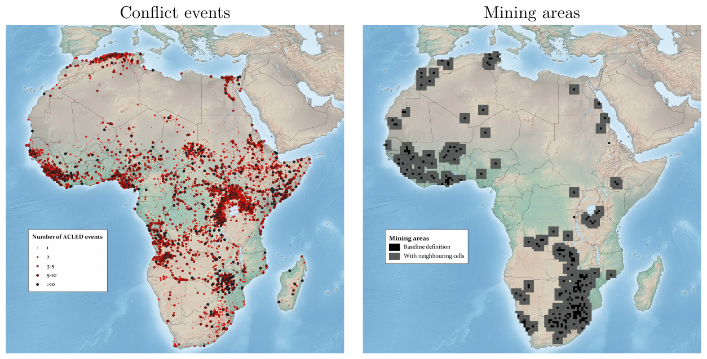
A spatial join matches each point to the polygon that contains it. The maps are Figure 3 of “This Mine Is Mine! How Minerals Fuel Conflicts in Africa”. Left: conflict events. Right: cells with mines in black, their neighbours in grey.
R Console, in the 23-spatial-vector folder; sf loaded
wh <- st_as_sf(data.frame(name = "Warren Hall", lon = -76.4797, lat = 42.4490),
coords = c("lon", "lat"), crs = 4326) # x (longitude) first, then y (latitude)
wh
#> Simple feature collection with 1 feature and 1 field
#> Geometry type: POINT
#> Dimension: XY
#> Bounding box: xmin: -76.4797 ymin: 42.449 xmax: -76.4797 ymax: 42.449
#> Geodetic CRS: WGS 84
#> name geometry
#> 1 Warren Hall POINT (-76.4797 42.449)Longitude is degrees east or west of Greenwich, negative in the Americas. Latitude is degrees north or south of the equator. 4326 is the code for GPS coordinates (WGS 84). Web maps show latitude first: 42.4490, −76.4797. A table of households or firms with coordinates works the same way.
R Console, in the 23-spatial-vector folder; co and wh from the slides before
wh <- st_transform(wh, st_crs(co)) # the point in the counties' CRS
st_drop_geometry(st_join(wh, co[c("GEOID", "NAME", "STUSPS")]))
#> name GEOID NAME STUSPS
#> 1 Warren Hall 36109 Tompkins NYco is the county layer. Both layers must use the same coordinate system (CRS), so st_transform() converts the point first. Otherwise st_join() stops with an error. st_drop_geometry() drops the shapes and returns a plain data frame.
R Console, in the 23-spatial-vector folder; co from the slides before; reads data/census/co-est2024-alldata.csv
pop <- read.csv("data/census/co-est2024-alldata.csv", fileEncoding = "latin1")
pop <- pop[pop$SUMLEV == 50, ] # 50: county rows; 40: state rows
head(pop[, c("STATE", "COUNTY", "CTYNAME")], 3)
#> STATE COUNTY CTYNAME
#> 2 1 1 Autauga County
#> 3 1 3 Baldwin County
#> 4 1 5 Barbour County
pop$GEOID <- paste0(pop$STATE, pop$COUNTY) # should be 01001, 01003, 01005
head(pop$GEOID, 3)
#> [1] "11" "13" "15"
nrow(merge(co, pop[c("GEOID", "POPESTIMATE2024")], by = "GEOID"))
#> [1] 1150Census Bureau, county population estimates 2020-2024 (co-est2024-alldata.csv). fileEncoding = "latin1" reads names such as Doña Ana County.
The 1,150 that match have a state code of 10 or more and a county code of 100 or more, which need no zero; Tompkins (36, 109) is one of them. paste0() glues text.
R Console, in the 23-spatial-vector folder; co from the slides before; reads data/census/co-est2024-alldata.csv
pop <- read.csv("data/census/co-est2024-alldata.csv", fileEncoding = "latin1",
colClasses = c(STATE = "character", COUNTY = "character")) # codes stay text: "01"
pop <- pop[pop$SUMLEV == 50, ]
pop$GEOID <- paste0(pop$STATE, pop$COUNTY)
head(pop$GEOID, 3)
#> [1] "01001" "01003" "01005"
cp <- merge(co, pop[c("GEOID", "POPESTIMATE2024")], by = "GEOID")
nrow(cp)
#> [1] 3144
st_drop_geometry(cp[cp$GEOID == "36109", c("NAME", "POPESTIMATE2024")])
#> NAME POPESTIMATE2024
#> 1885 Tompkins 105602colClasses sets a column’s type when R reads the file. merge() keeps the rows found in both tables, so the 91 territory rows drop out. all.x = TRUE would keep them, with NA. cp holds the counties with population, and co is unchanged. POPESTIMATE2024 is the estimate for July 1, 2024.
4 minutes. Find the county and the population of a place you pick, with a spatial join and a merge. co is the county layer and pop the population table from the slides before.
st_as_sf() takes longitude first.p <- st_as_sf(data.frame(name = "my place", lon = ..., lat = ...), coords = c("lon", "lat"), crs = 4326), then p <- st_transform(p, st_crs(co)).j <- st_join(p, co[c("GEOID", "NAME", "STUSPS")]), then st_drop_geometry(j).merge(st_drop_geometry(j), pop[c("GEOID", "POPESTIMATE2024")], by = "GEOID").Compare with the room: the largest county population anyone found. Then share a spot that returned no county, and why.
R Console, in the 23-spatial-vector folder; co and pop from the slides before
pl <- data.frame(name = c("Times Square", "Willis Tower", "Hollywood sign", "Golden Gate Bridge"),
lon = c(-73.9855, -87.6359, -118.3217, -122.4783),
lat = c(40.7580, 41.8789, 34.1341, 37.8199))
p <- st_transform(st_as_sf(pl, coords = c("lon", "lat"), crs = 4326), st_crs(co))
j <- st_join(p, co[c("GEOID", "NAME", "STUSPS")])
merge(st_drop_geometry(j), pop[c("GEOID", "POPESTIMATE2024")], by = "GEOID", all.x = TRUE)
#> GEOID name NAME STUSPS POPESTIMATE2024
#> 1 06037 Hollywood sign Los Angeles CA 9757179
#> 2 17031 Willis Tower Cook IL 5182617
#> 3 36061 Times Square New York NY 1660664
#> 4 <NA> Golden Gate Bridge <NA> <NA> NALos Angeles County is the largest, with 9,757,179 people. Manhattan is New York County. The middle of the Golden Gate Bridge returns no county, because the county shapes stop at the shoreline, about 630 m away.

Later in this part: Warren Hall’s distance to Pennsylvania.

A geographic CRS, such as 4269 or 4326, gives degrees. A projected CRS gives metres on a flat map. Flattening the Earth always stretches something, the way an orange peel tears when pressed flat. Lengths on the round Earth here use a sphere of radius 6,371 km. Each coloured segment spans 15 degrees, and its label gives the length of one degree.

Red: the United States. Blue: Greenland, which has about a fifth of the US’s area. The codes come from the EPSG registry, and st_crs() shows a layer’s code. UTM is a conformal projection made of 60 strips, each 6° wide. Azimuthal projections keep directions from one point, as the Ithaca map does. Compromise projections, such as Robinson, keep nothing exactly but distort less overall. The grouping follows Lovelace, Nowosad & Muenchow (Geocomputation with R, section 7.6).
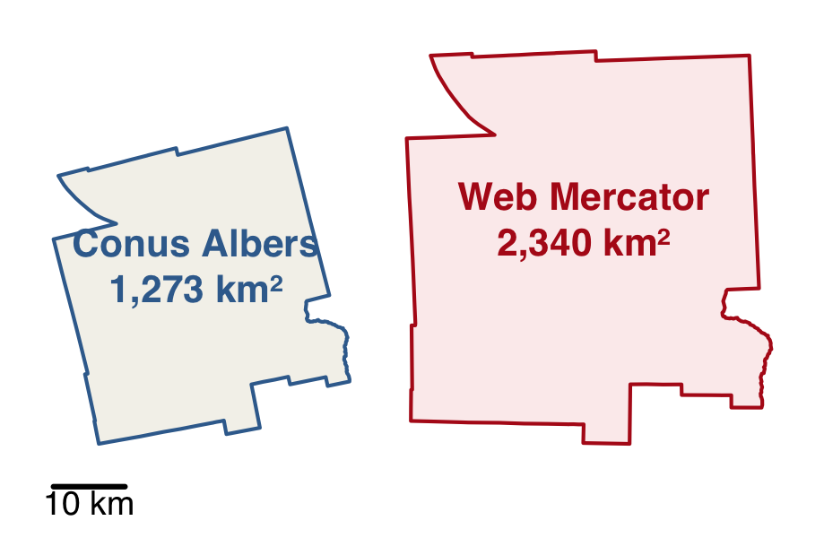
R Console, in the 23-spatial-vector folder; tk from the slides before
tk_m <- st_transform(tk, 5070) # Conus Albers: equal area, metres
round(c(albers = as.numeric(st_area(tk_m)) / 1e6, # km2
web_mercator = as.numeric(st_area(st_transform(tk, 3857))) / 1e6,
round_earth = as.numeric(st_area(tk)) / 1e6, # degrees: sf measures on a sphere
census = (tk$ALAND + tk$AWATER) / 1e6), 1)
#> albers web_mercator round_earth census
#> 1273.0 2339.8 1271.0 1273.1
round(as.numeric(st_length(st_boundary(tk_m))) / 1e3, 1) # perimeter, km
#> [1] 174.45070 is the EPSG code of Conus Albers. st_area() returns m². Web Mercator stretches areas by 1/cos²(latitude), which is 1.84 at Ithaca. For the perimeter, st_boundary() turns the polygon into a line and st_length() measures it. ALAND (1,229.3 km²) leaves out the county’s part of Cayuga Lake.

An instrument changes the treatment (here, the Protestant share) and affects the outcome only through it. The map is Figure III of “Was Weber Wrong? A Human Capital Theory of Protestant Economic History”. The cross marks Wittenberg.

R Console, in the 23-spatial-vector folder; ny (New York's 62 counties) from Part 1
ts <- st_as_sf(data.frame(name = "Times Square", lon = -73.9855, lat = 40.7580),
coords = c("lon", "lat"), crs = 4326)
ny_co <- st_transform(ny, 5070) # New York's counties, in metres
pt_ny <- st_point_on_surface(st_geometry(ny_co)) # a point inside each county
ny_co$km_ts <- as.numeric(st_distance(pt_ny, st_transform(ts, 5070))) / 1e3
km <- setNames(round(ny_co$km_ts), ny_co$NAME); km[c("Tompkins", names(which.max(km)))]
#> Tompkins Niagara
#> 280 479st_point_on_surface() returns a point that is always inside the county. A centroid, the centre of the area, can fall outside a curved shape. Tompkins is outlined in red.
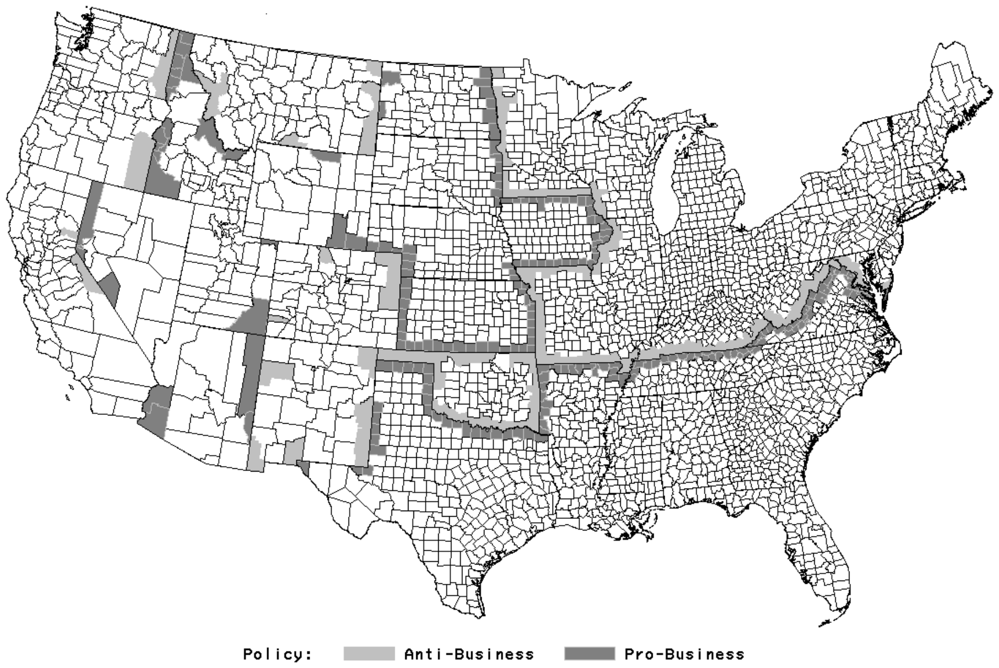
A right-to-work law bans contracts that require union membership. The map is Figure 3 of “The Effect of State Policies on the Location of Manufacturing: Evidence from State Borders” (working paper version, 1996). It shades the counties within 25 miles of these borders, dark on the right-to-work side.
R Console, in the 23-spatial-vector folder; wh from the slides before; reads data/census/cb_2024_us_state_500k.zip
unzip("data/census/cb_2024_us_state_500k.zip", exdir = "data_clean/states")
states <- st_read("data_clean/states/cb_2024_us_state_500k.shp", quiet = TRUE)
states_m <- st_transform(states, 5070); wh_m <- st_transform(wh, 5070) # Conus Albers, metres
ny_m <- states_m[states_m$STUSPS == "NY", ]
km <- function(a, b) round(as.numeric(st_distance(a, b)) / 1e3, 1)
c(to_PA = km(wh_m, states_m[states_m$STUSPS == "PA", ]), to_NY = km(wh_m, ny_m),
to_NY_border = km(wh_m, st_boundary(ny_m)))
#> to_PA to_NY to_NY_border
#> 50.3 0.0 50.3st_distance() returns 0 for a point inside a polygon. 5070 is Conus Albers, an equal-area projection in metres. On the round Earth the distance is 50.0 km, 0.6% shorter.
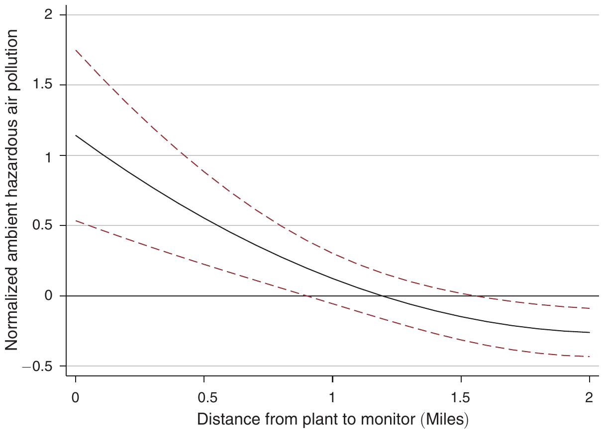
Low birth weight is under 2,500 g. The figure is Figure 2 of “Environmental Health Risks and Housing Values: Evidence from 1,600 Toxic Plant Openings and Closings”. Air pollution falls with distance from the plant and is gone by about 1 mile, so the rings are small.
R Console; co and wh_m from the slides before
b <- st_buffer(wh_m, 50000) # within 50,000 m
co_m <- st_transform(co, 5070)
near <- co_m[b, ] # the counties b reaches
table(near$STUSPS)
#>
#> NY
#> 11
R Console, in the 23-spatial-vector folder; b, near, co_m, wh_m and ny_m from the slide before
par(mar = c(0, 0, 0, 0))
plot(st_geometry(st_buffer(wh_m, 85000)), border = NA) # sets the map's extent
plot(st_geometry(co_m[co_m$STUSPS %in% c("NY", "PA"), ]), col = "grey95", border = "white", add = TRUE)
plot(st_geometry(near), col = "#C9DAEA", border = "white", add = TRUE)
plot(st_boundary(st_geometry(ny_m)), lwd = 3, add = TRUE) # New York's boundary
plot(b, col = NA, border = "#B31B1B", lwd = 2, add = TRUE)
plot(st_geometry(wh_m), pch = 19, col = "#B31B1B", add = TRUE)
text(st_coordinates(st_point_on_surface(st_geometry(near))), near$NAME, cex = 0.7)The distance is in the CRS’s units, metres in 5070. co_m[b, ] keeps the counties that touch or overlap the circle. The thick line is New York’s border. The code for the map is on the session page and in the live script.

A metropolitan area is a city plus the counties that commute to it. The map shows the 1947 plan’s lines around Chicago, over the shaded metropolitan areas. It is part of Figure 2 of the 2008 working paper of “Urban Growth and Transportation”.
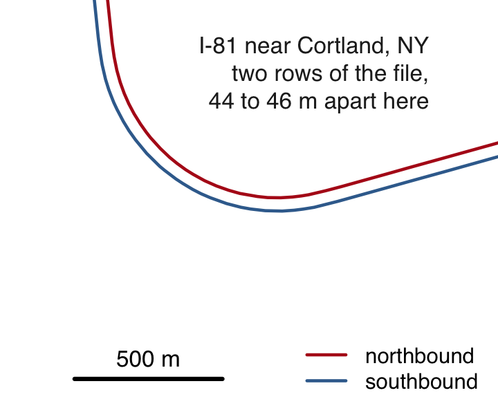
R Console, in the 23-spatial-vector folder; ny_m (New York in 5070); reads data_clean/interstates_ny_box.gpkg
it <- st_read("data_clean/interstates_ny_box.gpkg", quiet = TRUE) # Census Interstate lines near New York
it_ny <- st_intersection(st_transform(it, 5070), ny_m["STUSPS"]) # the parts inside New York
# st_intersection() warns that attributes are assumed constant: expected here
it_ny$miles <- as.numeric(st_length(it_ny)) / 1609.344
round(sum(it_ny$miles), 1)
#> [1] 3599.1
round(sort(tapply(it_ny$miles, it_ny$FULLNAME, sum), decreasing = TRUE)[1:3], 1)
#> I- 90 I- 87 I- 86
#> 770.1 669.1 534.9TIGER is the Census map database of roads and boundaries. RTTYP “I” marks an Interstate highway. A divided highway has a separate roadway for each direction. A GeoPackage (.gpkg) is one file with a layer’s shapes, table and CRS. One mile is 1,609.344 m.
tools/cut_interstates.R made the GeoPackage from the national primary-roads file (38 MB, fetched by tools/fetch_data.R): 17,522 lines, of which 5,619 are Interstates and 569 touch New York’s bounding box. The Federal Highway Administration’s route log lists I-90 in New York at 386.27 miles and I-87 at 333.65, about half of the lengths above. I-481 near Syracuse is two lines of 14.75 and 14.78 miles.
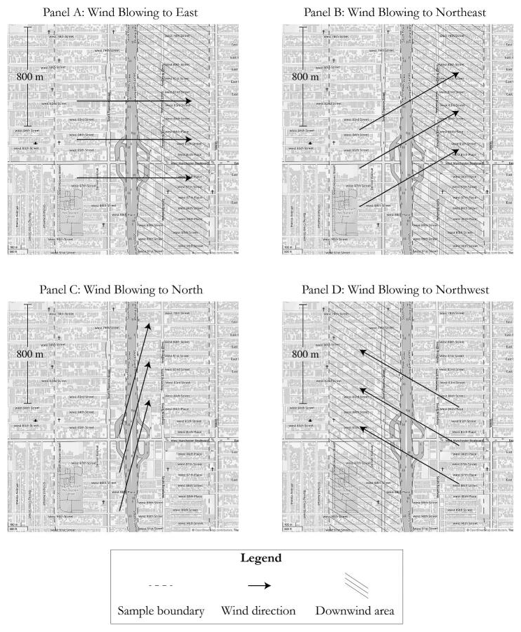
A home’s direction from the highway is fixed, and the wind decides how often the home is downwind. The panels are Figure 1 of “As the Wind Blows: The Effects of Long-Term Exposure to Air Pollution on Mortality”. The hatched side is downwind for each wind direction.
R Console; wh and ts from the slides before
bearing <- function(a, b, crs) { # degrees from map north
d <- st_coordinates(st_transform(b, crs)) -
st_coordinates(st_transform(a, crs)) # east, north (m)
(atan2(d[1], d[2]) * 180 / pi) %% 360 # 0 to 360
}
round(c(utm_18N = bearing(wh, ts, 32618),
albers = bearing(wh, ts, 5070)), 1)
#> utm_18N albers
#> 132.2 120.0
EPSG 32618 is UTM zone 18N, from 78°W to 72°W, which includes Ithaca and New York City. atan2(east, north) gives the angle from north in radians. Raw longitude and latitude give 124°, because they treat a degree east (82 km here) as equal to a degree north (111 km). UTM’s north is 1° off true north at Warren Hall.
The direction on the round Earth, from the great-circle formula for the starting direction of the shortest route:
R Console
r <- pi / 180 # degrees to radians
p1 <- 42.4490 * r; p2 <- 40.7580 * r # latitudes of Warren Hall and Times Square
dl <- (-73.9855 - -76.4797) * r # difference in longitude
round((atan2(sin(dl) * cos(p2), cos(p1) * sin(p2) - sin(p1) * cos(p2) * cos(dl)) / r) %% 360, 1)
#> [1] 131.4
Later in this part: each county is a dot, and a line joins two counties that touch.
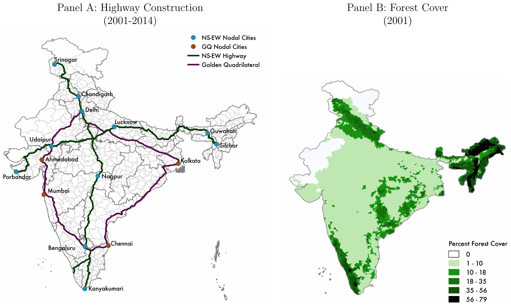
Forest cover is measured from satellite images. The maps are Figure 1 of the authors’ 2019 version of “The Ecological Impact of Transportation Infrastructure”. Left: the new national highways. Right: forest cover in 2001.

R Console; wh_m, it_ny, ny_co and pt_ny from Part 2
k <- st_nearest_feature(wh_m, it_ny) # row of the nearest Interstate piece
c(it_ny$FULLNAME[k], round(as.numeric(st_distance(wh_m, it_ny[k, ])) / 1e3, 1)) # name, km
#> [1] "I- 81" "30.4"
kk <- st_nearest_feature(pt_ny, it_ny) # every New York county at once
ny_co$km_it <- as.numeric(st_distance(pt_ny, it_ny[kk, ], by_element = TRUE)) / 1e3
head(sort(setNames(round(ny_co$km_it), ny_co$NAME), decreasing = TRUE), 2) # km, farthest two
#> St. Lawrence Franklin
#> 75 59wh_m is Warren Hall in metres, it_ny the Interstates in New York and pt_ny a point inside each New York county. With by_element = TRUE, each point is measured to its own nearest road only.

US states may set a minimum wage above the federal one. st_touches(), on the next slide, finds such pairs. The map is Figure 2 of “Minimum Wage Effects Across State Borders: Estimates Using Contiguous Counties”. Black counties are in a pair whose states had different minimum wages.
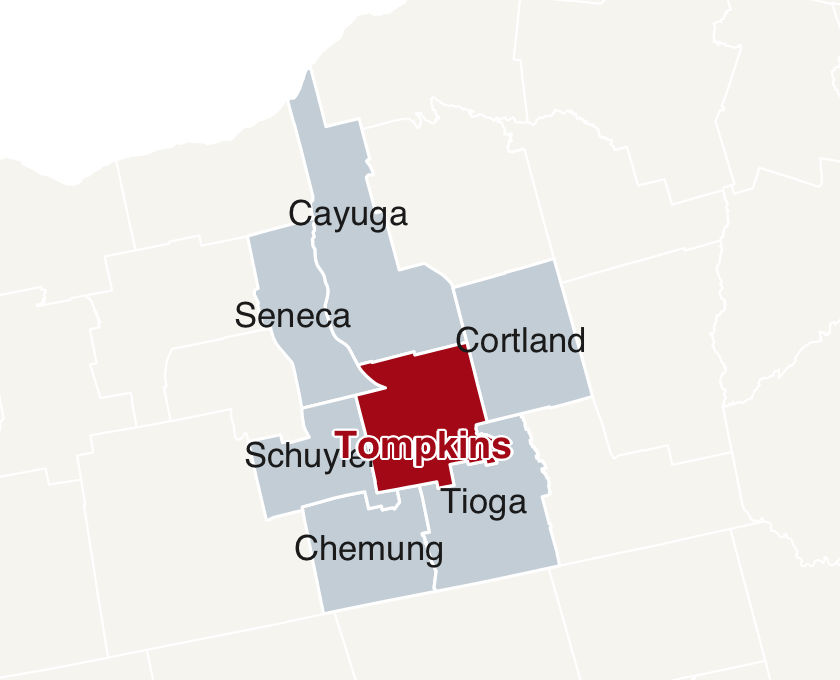
R Console, in the 23-spatial-vector folder; co from Part 1
off <- c("AK", "HI", "PR", "AS", "GU", "MP", "VI") # Alaska, Hawaii and the five territories
low <- st_transform(co[!co$STUSPS %in% off, ], 5070) # the lower 48 and DC, in metres
nrow(low)
#> [1] 3109
nb <- st_touches(low) # for each county, the rows of the counties it touches
i <- which(low$GEOID == "36109") # Tompkins's row
low$NAME[nb[[i]]]
#> [1] "Cayuga" "Chemung" "Tioga" "Seneca" "Cortland" "Schuyler"Two polygons touch when they share at least one border point. The result is a list: for each county, the row numbers of its neighbours. It takes about 2 seconds. Four island counties have no neighbours, because the file cuts counties at the shoreline. They are San Juan (WA), Nantucket and Dukes (MA), and Richmond (Staten Island, NY).
st_touches() also counts counties that meet at a single corner. Such neighbours are called queen neighbours, after the chess piece that moves diagonally; rook neighbours must share a stretch of border. The pattern "F***1****" in st_relate() asks for a shared stretch of border.
R Console, in the 23-spatial-vector folder; low and nb from the slide before
rook <- st_relate(low, pattern = "F***1****") # neighbours that share a stretch of border
c(touch = sum(lengths(nb)), share_border = sum(lengths(rook)))
#> touch share_border
#> 18122 17488
low$NAME[lengths(nb) == 0] # counties that touch no other
#> [1] "San Juan" "Nantucket" "Dukes" "Richmond"Each pair is listed from both sides, so 634 of the 18,122 links meet only at a corner. At the Four Corners, San Juan (New Mexico), San Juan (Utah), Apache (Arizona) and Montezuma (Colorado) meet at one point: Apache and Montezuma touch only there, and so do the two San Juans. The four islands join the graph only if a bridge or a ferry counts.
R Console. Installs igraph if missing
want <- c("igraph")
need <- want[!(want %in% installed.packages()[,"Package"])]
if (length(need)) install.packages(need)
lapply(want, function(i) require(i, character.only = TRUE))R Console, in the 23-spatial-vector folder; igraph from the chunk above; nb from the slides before
g <- graph_from_adj_list(nb, mode = "all") # node k is row k of low; an edge joins two neighbours
c(nodes = vcount(g), edges = ecount(g))
#> nodes edges
#> 3109 9061low is the 3,109 counties of the lower 48 and DC, and nb lists each county’s neighbours. With a graph, igraph can count the fewest borders between any two counties. On the map, a dot is a county and a line joins two counties that touch. Tompkins’s six lines are red.

R Console; low, nb, g and i from the slides before; pop from the population merge
n2 <- as.numeric(ego(g, order = 2, nodes = i, mindist = 2)[[1]]) # rows of the second neighbours
x <- pop$POPESTIMATE2024[match(low$GEOID, pop$GEOID)] # population, 2024
x_nb <- sapply(nb, function(k) mean(x[k])) # first neighbours' average
round(c(Tompkins = x[i], first = x_nb[i], second = mean(x[n2])))
#> Tompkins first second
#> 105602 49829 113002g is the graph and i is Tompkins’s row. ego() returns the counties within a given number of edges, and mindist = 2 drops the county and its first neighbours. The second neighbours have more people because they include Syracuse and Binghamton. In matrix form the spatial lag is Wx, where each row of W sums to 1. Second neighbours can instrument for the first neighbours’ average (Kelejian & Prucha, Journal of Real Estate Finance and Economics, 1998). Bramoullé, Djebbari & Fortin (Journal of Econometrics, 2009) use friends of friends the same way.

Market access measures how cheaply a county can reach buyers in every other county. The maps are panels C and D of Figure 2 in the 2013 working paper of “Railroads and American Economic Growth: A ‘Market Access’ Approach”.
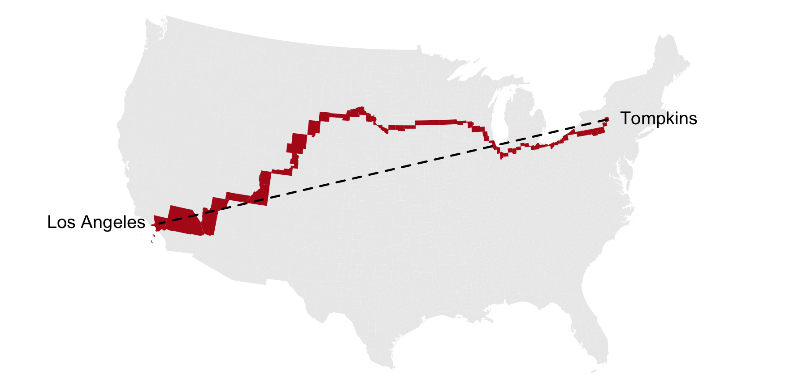
R Console, in the 23-spatial-vector folder; low, g and i from the slides before
la <- which(low$GEOID == "06037") # Los Angeles County
distances(g, i, la) # fewest county lines
#> [,1]
#> [1,] 57
route <- shortest_paths(g, from = i, to = la)$vpath[[1]] # one route with 57
unique(low$STUSPS[route])
#> [1] "NY" "PA" "OH" "IN" "IL" "WI" "MN" "IA" "SD" "WY" "CO" "UT" "AZ" "CA"
cen <- st_centroid(st_geometry(low)) # each county's centreR Console, in the 23-spatial-vector folder; low, route, cen, i and la from the slide before
par(mar = c(0, 0, 0, 0))
plot(st_geometry(low), col = "grey92", border = NA)
plot(st_geometry(low[route, ]), col = "#B31B1B", border = NA, add = TRUE)
ends <- st_coordinates(cen[c(i, la)])
segments(ends[1, 1], ends[1, 2], ends[2, 1], ends[2, 2], lty = 2, lwd = 1.5)
text(ends[, 1], ends[, 2], c("Tompkins", "Los Angeles"), pos = c(4, 2), cex = 0.8)
round(as.numeric(st_distance(cen[i], cen[la])) / 1e3) # km, straight line between the centres
#> [1] 3692distances() counts the borders crossed on the shortest route. shortest_paths() returns one such route; many routes tie at 57. The dashed line joins the two county centres, 3,692 km apart. The code for the map is on the session page and in the live script.
4 minutes. Count the county lines from Tompkins to a county you pick, and the kilometres per line. From the slides before, low is the lower-48 counties and g their graph. i is Tompkins’s row and cen each county’s centre.
st_drop_geometry(low[low$NAME == "Cook", c("GEOID", "NAME", "STUSPS")]), then j <- which(low$GEOID == "17031") (Cook County, Illinois).n <- distances(g, i, j), then unique(low$STUSPS[shortest_paths(g, from = i, to = j)$vpath[[1]]]).d_km <- as.numeric(st_distance(cen[i], cen[j])) / 1e3, then round(d_km / n[1], 1).Compare with the room: the most county lines anyone found. Then compare the kilometres per line for an eastern county and a western one.
R Console, in the 23-spatial-vector folder; low, g, i and cen from the slides before
gid <- c("36061", "17031", "12086", "48201", "53033", "06037", "53009")
j <- match(gid, low$GEOID)
r <- data.frame(NAME = low$NAME[j], STUSPS = low$STUSPS[j], lines = as.vector(distances(g, i, j)),
km = round(as.numeric(st_distance(cen[i], cen[j])) / 1e3))
r$km_per_line <- round(r$km / r$lines, 1); r
#> NAME STUSPS lines km km_per_line
#> 1 New York NY 8 279 34.9
#> 2 Cook IL 23 933 40.6
#> 3 Miami-Dade FL 40 1913 47.8
#> 4 Harris TX 44 2190 49.8
#> 5 King WA 60 3579 59.6
#> 6 Los Angeles CA 57 3692 64.8
#> 7 Clallam WA 63 3734 59.3Each county line covers about 35 to 45 km in the East. Near the West Coast it covers 60 to 65 km, because western counties are larger. The most is 63 lines, to Clallam County, WA. The four island counties cannot be reached.
R Console, in the 23-spatial-vector folder; low, g and i from the slides before
d <- as.vector(distances(g, i)) # county lines from Tompkins to every county
br <- c(-1, 0, 5, 10, 20, 30, 40, 50, 63)
pal <- hcl.colors(8, "YlOrRd", rev = TRUE)
par(mar = c(0, 0, 0, 8))
plot(st_geometry(low), col = ifelse(is.finite(d), pal[cut(d, br)], "grey60"), border = NA)
legend("right", c("0", "1-5", "6-10", "11-20", "21-30", "31-40", "41-50", "51-63"), fill = pal, border = NA,
bty = "n", cex = 0.85, title = "county lines\ncrossed from\nTompkins", title.adj = 0, xpd = TRUE, inset = -0.17)
cl_wa <- st_coordinates(st_point_on_surface(st_geometry(low[which.max(replace(d, !is.finite(d), 0)), ])))
text(cl_wa[1], cl_wa[2], "Clallam, 63", pos = 4, cex = 0.8)
table(cut(d, br))
#>
#> (-1,0] (0,5] (5,10] (10,20] (20,30] (30,40] (40,50] (50,63]
#> 1 81 197 483 608 735 551 449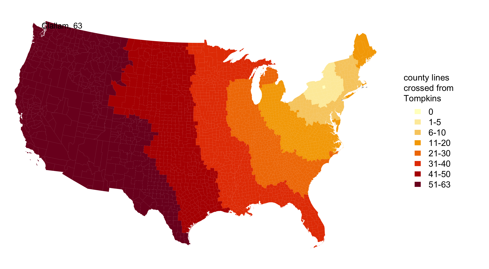
One call, distances(g, i), gives all 3,109 counties at once. The island counties are grey. The R that draws this is on the session page and in the live script.
A minimum spanning tree is the shortest set of links that joins every city. “Trade Integration, Market Size, and Industrialization: Evidence from China’s National Trunk Highway System”; “On the Road: Access to Transportation Infrastructure and Economic Growth in China”.
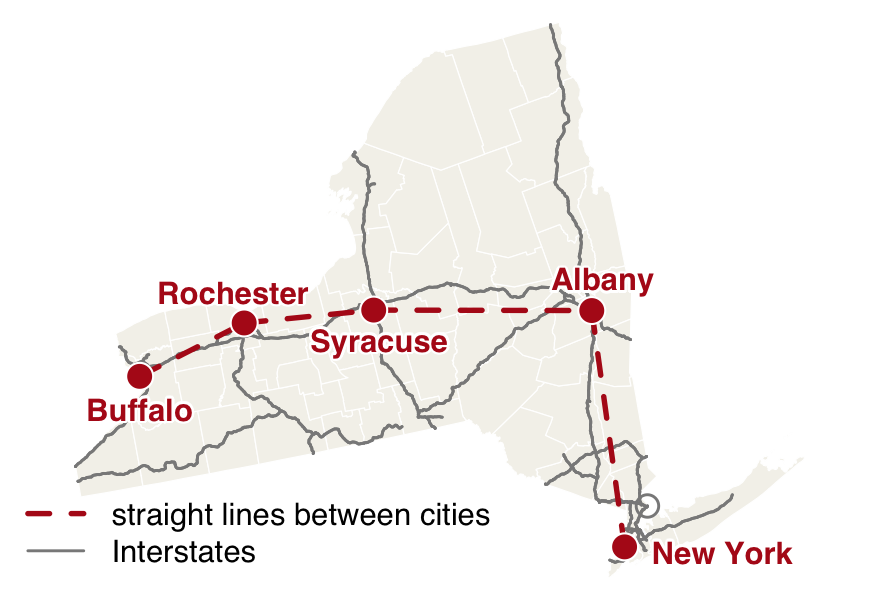
R Console; igraph loaded; pt_ny and ny_co from the slides before
city <- data.frame(name = c("New York", "Buffalo", "Rochester", "Syracuse", "Albany"), # each city hall
lon = c(-74.0060, -78.8784, -77.6088, -76.1474, -73.7562),
lat = c(40.7128, 42.8864, 43.1566, 43.0481, 42.6526))
city <- st_transform(st_as_sf(city, coords = c("lon", "lat"), crs = 4326), 5070)
d_c <- matrix(as.numeric(st_distance(city)), 5) / 1e3 # km between every pair
tree <- mst(graph_from_adjacency_matrix(d_c, mode = "undirected", weighted = TRUE))
e <- as_edgelist(tree, names = FALSE); xy <- st_coordinates(city) # the 4 lines it keeps
ln <- st_sfc(lapply(1:nrow(e), function(r) st_linestring(xy[e[r, ], ])), crs = 5070)
ny_co$km_line <- apply(st_distance(pt_ny, ln), 1, min) / 1e3 # county to the nearest line
round(cor(ny_co$km_line, ny_co$km_it), 2)
#> [1] 0.46The five cities are the main cities of New York’s five largest metropolitan areas. The tree’s total length is 644 km. st_linestring() makes a line from a matrix of points.
Two firms with the same shares of patents in each class are as close as possible. The social return to research is at least twice the private return. “Identifying Technology Spillovers and Product Market Rivalry”; “Social Connectedness: Measurement, Determinants, and Effects”.
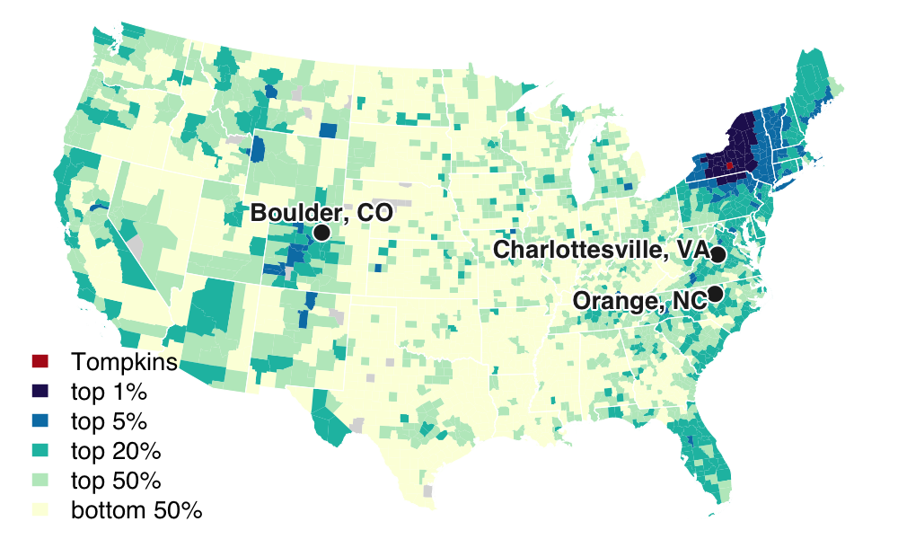
R Console, in the 23-spatial-vector folder; low, i, cen and pop from the slides before
sci <- read.csv("data_clean/sci_tompkins.csv", colClasses = c(GEOID = "character"))
k <- match(sci$GEOID, low$GEOID) # NA outside the lower 48
sci$km <- as.numeric(st_distance(cen[i], cen))[k] / 1e3 # from Tompkins's centre
s <- sci[sci$GEOID != "36109" & !is.na(k), ]
coef(lm(log(sci) ~ log(km), s))["log(km)"] # % change in links per 1% more km
#> log(km)
#> -0.7664943
big <- pop$GEOID[pop$POPESTIMATE2024 > 40000] # counties over 40,000 people
far <- s[s$km > 500 & s$GEOID %in% big, ]
head(low$NAME[match(far$GEOID[order(-far$sci)], low$GEOID)], 3) # most linked, over 500 km away
#> [1] "Charlottesville" "Orange" "Boulder"sci is Meta’s Social Connectedness Index: friendship links between two counties, divided by the product of their numbers of Facebook users. big drops counties under 40,000 people, whose numbers are noisy. Over all county pairs, Bailey et al. find 1.48. I cut the file with tools/cut_sci.R.
R Console. Installs fixest if missing
want <- c("fixest")
need <- want[!(want %in% installed.packages()[,"Package"])]
if (length(need)) install.packages(need)
lapply(want, function(i) require(i, character.only = TRUE))A standard error measures how much an estimate would vary from sample to sample. Pairs of places get less weight the farther apart they are, and none beyond the cutoff. Conley’s paper is titled “GMM Estimation with Cross Sectional Dependence”.
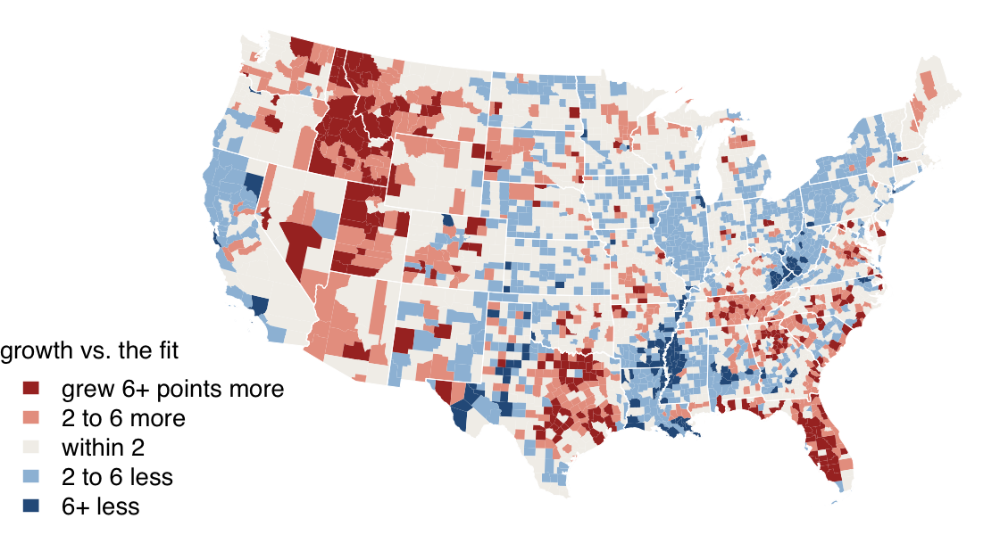
Growth: the percent change in population from 2020 to 2024; the legend is in percentage points. The fit: a line in the log of people per km² in 2020, across the 3,109 counties of the lower 48 and DC. Census Bureau county population estimates.
R Console; fixest from the slide before; low and pop from the slides before
p <- pop[match(low$GEOID, pop$GEOID), ]
ll <- st_coordinates(st_transform(st_point_on_surface(st_geometry(low)), 4326)) # degrees, as conley() needs
dd <- data.frame(growth = 100 * (p$POPESTIMATE2024 / p$POPESTIMATE2020 - 1), # % change, 2020 to 2024
ldens = log(p$POPESTIMATE2020 / (low$ALAND / 1e6)), # log people per km2, 2020
lon = ll[, 1], lat = ll[, 2])
m <- feols(growth ~ ldens, dd); round(coef(m)["ldens"], 2)
#> ldens
#> 0.65
round(sapply(list(robust = "hetero", within_100km = conley(100), within_500km = conley(500)),
function(v) se(summary(m, vcov = v))["ldens"]), 3)
#> robust.ldens within_100km.ldens within_500km.ldens
#> 0.053 0.099 0.241fixest is an R package for regressions; feols() fits one. "hetero" is the robust standard error, which allows unequal variances but no correlation. conley(100) allows correlation between counties up to 100 km apart.

Later in this part: each county’s smoke on 7 June 2023.
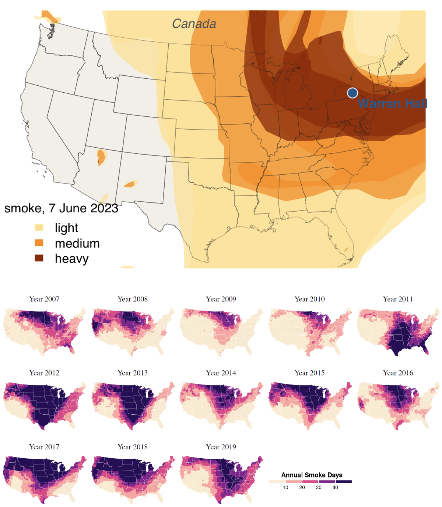
Top: the outlines from NOAA’s Hazard Mapping System (HMS) on 7 June 2023, when smoke from fires in Quebec reached New York. Bottom: the paper’s Figure 1 (2022 working paper), the days each county was fully covered by smoke, 2007 to 2019.
R Console, in the 23-spatial-vector folder; low from Part 3, pop from Part 1; reads data/noaa/hms/
s <- st_read("/vsizip/data/noaa/hms/hms_smoke20230607.zip", quiet = TRUE) # /vsizip/ reads inside the zip
s <- st_transform(st_make_valid(s), 5070) # 88 plumes, in metres
lev <- c(Light = 1, Medium = 2, Heavy = 3) # densities as numbers
densest <- function(s) sapply(st_within(low, s), function(k) if (length(k)) max(lev[s$Density[k]]) else 0)
d7 <- densest(s)
table(d7) # 0 none, 1 light, 2 medium, 3 heavy
#> d7
#> 0 1 2 3
#> 427 894 1149 639
low$pop <- pop$POPESTIMATE2023[match(low$GEOID, pop$GEOID)] # people, July 2023
sum(low$pop[d7 == 3]) / 1e6 # millions under heavy smoke
#> [1] 105.6756low is the 3,109 counties of the lower 48 and DC. st_within(low, s) finds, for each county, the plumes that cover all of it, and max() keeps the densest. Large counties are rarely fully covered. A point inside each county, or the share under smoke, would avoid this.
R Console; wh_m from Part 2, s from the slide before
table(s$Density)
#>
#> Heavy Light Medium
#> 37 33 18
st_drop_geometry(st_join(wh_m, s[c("Density", "Start", "End")])) # every plume over Warren Hall
#> name Density Start End
#> 1 Warren Hall Light 2023158 1030 2023158 1430
#> 1.1 Warren Hall Light 2023158 1900 2023158 2330
#> 1.2 Warren Hall Medium 2023158 1100 2023158 1500
#> 1.3 Warren Hall Medium 2023158 1900 2023158 2330
#> 1.4 Warren Hall Heavy 2023158 1100 2023158 1500
#> 1.5 Warren Hall Heavy 2023158 1900 2023158 2330wh_m is Warren Hall in metres (5070). Start and End are the year, the day of the year (158 is 7 June) and the hour in universal time (UTC, 4 hours ahead of New York). /vsizip/ is GDAL’s way to read a file inside a zip, so the 30 zips stay as downloaded.

R Console, in the 23-spatial-vector folder; densest and low from the slide before; reads data/noaa/hms/
hms_files <- list.files("data/noaa/hms", full.names = TRUE) # one zip per day of June 2023
smoke <- function(f) st_transform(st_make_valid(st_read(paste0("/vsizip/", f), quiet = TRUE)), 5070)
day <- as.Date(substr(basename(hms_files), 10, 17), "%Y%m%d") # hms_smoke20230607.zip: 7 June
dens <- sapply(hms_files, function(f) densest(smoke(f))) # counties x days, about 6 seconds
colnames(dens) <- format(day); dim(dens)
#> [1] 3109 30
heavy <- colSums(low$pop * (dens == 3), na.rm = TRUE) / 1e6 # millions under heavy smoke, each day
round(heavy[c("2023-06-07", "2023-06-15", "2023-06-29")])
#> 2023-06-07 2023-06-15 2023-06-29
#> 106 91 51The table is a panel: each county over time, one column per day. Red marks the two days above 90 million people, June 7 and June 15. Tompkins had 5 days of heavy smoke in June. In all, 1,739 counties, home to 172 million people, had at least one.

I drew the table dens once per day and joined the frames into a GIF with the magick package. The code is on the session page and in the live script.
R Console, in the 23-spatial-vector folder; dens, heavy, day, low and states_m from the slides before; writes smoke_june2023.gif
want <- c("magick") # joins the frames into a GIF
need <- want[!(want %in% installed.packages()[,"Package"])]
if (length(need)) install.packages(need)
pal <- c("#EDEBE6", "#FDE6A8", "#F4A03C", "#9C3D0B") # none, light, medium, heavy
tmp <- file.path(tempdir(), "smoke"); dir.create(tmp, showWarnings = FALSE)
for (d in seq_along(day)) {
png(file.path(tmp, sprintf("f%02d.png", d)), width = 900, height = 560, pointsize = 15)
layout(matrix(1:2), heights = c(3.9, 1.7))
par(mar = c(0, 0, 1.6, 0))
plot(st_geometry(low), col = pal[dens[, d] + 1], border = NA)
plot(st_geometry(states_m[states_m$STUSPS %in% low$STUSPS, ]), col = NA, border = "white", lwd = 0.5, add = TRUE)
mtext(format(day[d], "%B %e, %Y"), side = 3, line = 0.2, font = 2, cex = 1.1, adj = 0.05)
legend("bottomleft", c("no smoke", "light", "medium", "heavy"), fill = pal, border = "white", bty = "n", cex = 0.8)
par(mar = c(2.2, 5.2, 0.8, 1), las = 1, bty = "n")
barplot(heavy, col = ifelse(seq_along(heavy) == d, "#B31B1B", "#D9CFC4"), border = NA, ylim = c(0, 120),
names.arg = format(day, "%e"), cex.names = 0.7, ylab = "millions under\nheavy smoke", cex.lab = 0.85)
dev.off()
}
gif <- magick::image_animate(magick::image_read(list.files(tmp, full.names = TRUE)), fps = 2)
magick::image_write(gif, "smoke_june2023.gif") # two frames a secondR Console, in the 23-spatial-vector folder; hms_files, day, lev and smoke from the slides before
pm <- read.csv("data_clean/pm25_june2023.csv", colClasses = c(site = "character")) # site, date, pm25, lon, lat
mon <- st_transform(st_as_sf(pm, coords = c("lon", "lat"), crs = 4326), 5070)
mon$smoke <- NA
for (k in seq_along(hms_files)) { # day by day: that day's monitors, that day's plumes
s <- smoke(hms_files[k]); w <- which(mon$date == format(day[k]))
over <- st_intersects(mon[w, ], s) # plumes over each monitor that day
mon$smoke[w] <- sapply(over, function(j) if (length(j)) max(lev[s$Density[j]]) else 0)
}
hv <- mon[mon$smoke == 3, ] # monitor-days under a heavy plume
round(tapply(hv$pm25, hv$date, median)[c("2023-06-08", "2023-06-15", "2023-06-28")])
#> 2023-06-08 2023-06-15 2023-06-28
#> 90 14 114PM2.5: particles 2.5 micrometres across or smaller, in micrograms per cubic metre (µg/m³); the EPA’s daily standard is 35. EPA: the US Environmental Protection Agency; each value is a monitor’s 24-hour average. I cut June 2023 from the EPA’s daily file for 2023 with tools/cut_pm25.R. For a point, st_intersects() and st_within() give the same plumes.
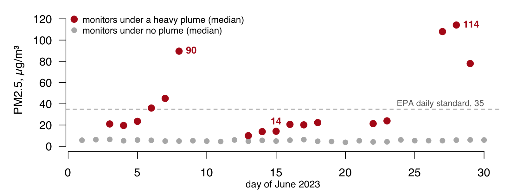
Each red point is the median of the monitors under a heavy plume that day. Grey is the median under no plume. Days with fewer than 10 monitors under a heavy plume are left out. st_intersects() finds the plumes over each monitor; the code is on the session page. PM2.5 means particles 2.5 micrometres across or smaller, as a 24-hour average. A smoke variable built from the plumes should be compared with the monitors.
The variables for comparing counties on the two sides of a state line, before and after a policy: Medicaid’s expansion in 2014. The design follows the county pairs of Dube, Lester & Reich and the border distance of Holmes, from Part 3 and Part 2.
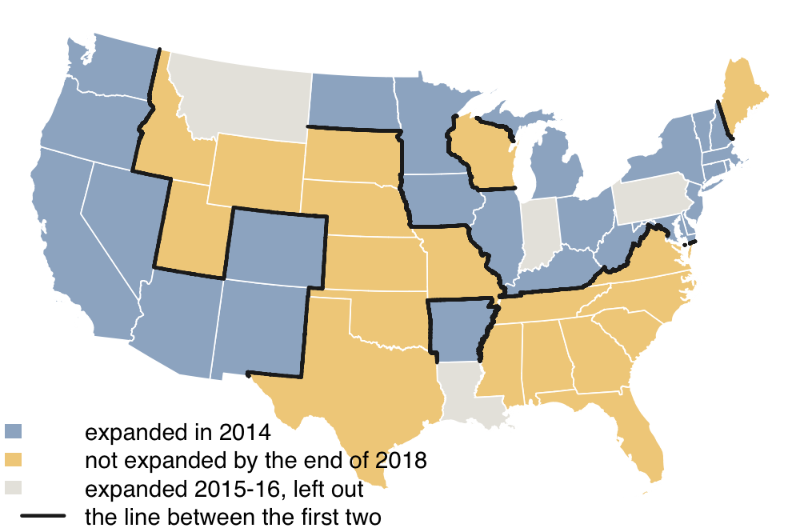
Medicaid: US public health insurance for people with low incomes, run by each state with federal money. The Affordable Care Act, the 2010 federal health-insurance law, extended it to adults with incomes up to 138% of the federal poverty line; a 2012 Supreme Court ruling let each state decide. Indiana, Louisiana, Montana and Pennsylvania (2015-16) are left out. 2018 is where the insurance data used here end. KFF (a US health-policy research organization), State Health Facts, Status of State Action on the Medicaid Expansion Decision, read 2026-11-13.
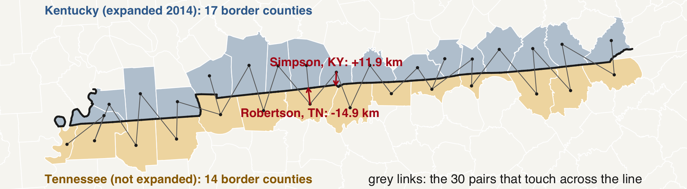
A border design compares places on either side of a border. Dube, Lester & Reich (REStat, 2010) compared every pair of touching counties across a state line, 1990-2006, for restaurants and other low-wage jobs, and found no job losses from higher minimum wages. US states may set a minimum wage above the federal one. The signed distances are on the slides that follow.
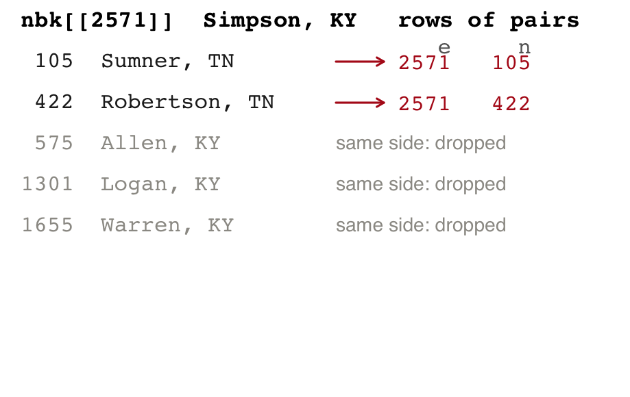
R Console, in the 23-spatial-vector folder; low from Part 3; reads data_clean/medicaid_expansion.csv
med <- read.csv("data_clean/medicaid_expansion.csv") # state, month, group: I typed it from KFF's table
exp14 <- med$state[med$group == "expanded 2014"]
not14 <- med$state[med$group == "not expanded by 2018"]
k <- low[low$STUSPS %in% c(exp14, not14), c("GEOID", "NAME", "STUSPS")]
k$exp14 <- k$STUSPS %in% exp14 # TRUE in a state that expanded in 2014
nbk <- st_touches(k)
pairs <- data.frame(e = rep(seq_along(nbk), lengths(nbk)), n = unlist(nbk)) # every touching pair
pairs <- pairs[k$exp14[pairs$e] & !k$exp14[pairs$n], ] # keep each pair once: expansion county first
nrow(pairs)
#> [1] 377low holds the 3,109 counties of the lower 48 and DC, in metres. st_touches() returns, for each county, the rows of the counties that share its border; for Simpson, KY (row 2571 of k), two of five neighbours are in Tennessee and become rows of pairs (e: the expansion county, n: its neighbour). k holds the 2,830 counties of the two groups.
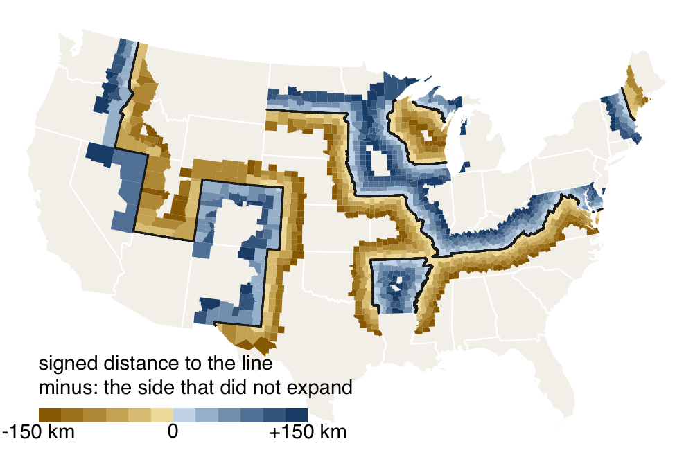
R Console, in the 23-spatial-vector folder; k, exp14, not14 from the slide before; states_m from Part 2
states_k <- states_m[states_m$STUSPS %in% c(exp14, not14), ]
ln <- st_intersection(st_union(states_k[states_k$STUSPS %in% exp14, ]), # the expansion states as one shape
st_union(states_k[states_k$STUSPS %in% not14, ])) # where it meets the rest: a line
round(as.numeric(st_length(ln)) / 1e3) # km
#> [1] 12359
pt_co <- st_point_on_surface(st_geometry(k)) # one point inside each county
k$dist_km <- ifelse(k$exp14, 1, -1) * as.numeric(st_distance(pt_co, ln)) / 1e3 # minus: did not expandst_union() merges many polygons into one shape; where two touching shapes meet is their shared border. st_point_on_surface() gives a point sure to lie inside each county. The running variable is the one whose crossing switches the policy on. Holmes (JPE, 1998) used this distance: manufacturing’s share of jobs rises by about a third on crossing into a state whose law bars contracts that require union membership.
R Console, in the 23-spatial-vector folder; k and pairs from the slides before; reads data_clean/sahie_uninsured.csv
sahie <- read.csv("data_clean/sahie_uninsured.csv", colClasses = c(GEOID = "character")) # GEOID, year, pctui
pp <- data.frame(GEOID_e = k$GEOID[pairs$e], GEOID_n = k$GEOID[pairs$n])
pp <- merge(pp, setNames(sahie, c("GEOID_e", "year", "pctui_e")), by = "GEOID_e") # expansion side
pp <- merge(pp, setNames(sahie, c("GEOID_n", "year", "pctui_n")), by = c("GEOID_n", "year")) # its neighbour
nrow(pp) # 377 pairs x 11 years
#> [1] 4147
sp <- pp$GEOID_e == "21213" & pp$GEOID_n == "47147" # Simpson, KY, and Robertson, TN
pp[sp & pp$year %in% 2013:2016, c("year", "pctui_e", "pctui_n")]
#> year pctui_e pctui_n
#> 2348 2013 38.2 42.9
#> 2352 2014 18.9 36.4
#> 2356 2015 11.2 31.8
#> 2359 2016 10.4 28.9SAHIE: the Census Bureau’s Small Area Health Insurance Estimates, modelled from survey answers with tax and program records. Here: adults aged 18 to 64 at or below 138% of the poverty line; pctui is their percent uninsured. A pair-year is one pair in one year. I made the CSV from eleven yearly Census files with tools/sahie_panel.R.
R Console, in the 23-spatial-vector folder; sahie and k from the slides before
w <- merge(sahie[sahie$year == 2013, c("GEOID", "pctui")], sahie[sahie$year == 2016, c("GEOID", "pctui")],
by = "GEOID", suffixes = c("_2013", "_2016"))
kd <- merge(st_drop_geometry(k), w, by = "GEOID")
nrow(kd) # of 2,830 counties
#> [1] 2820
kd$change <- kd$pctui_2016 - kd$pctui_2013 # percentage points
m <- tapply(kd$change, cut(kd$dist_km, seq(-150, 150, 25)), mean) # mean change in 25 km bands
round(m, 1)
#> (-150,-125] (-125,-100] (-100,-75] (-75,-50] (-50,-25] (-25,0] (0,25] (25,50]
#> -10.6 -10.4 -10.9 -10.9 -10.8 -10.2 -19.8 -19.7
#> (50,75] (75,100] (100,125] (125,150]
#> -19.5 -18.5 -18.1 -18.9
par(mar = c(4.2, 6, 0.5, 0.5), las = 1, bty = "n")
x <- seq(-137.5, 137.5, 25)
plot(x, m, pch = 16, cex = 1.4, col = ifelse(x > 0, "#3A6C9C", "#9A6B00"), ylim = c(-22, 0),
xlab = "distance from a county to the line, km (minus: did not expand)",
ylab = "change in uninsured share,\n2013 to 2016 (points)")
abline(v = 0, lty = 2); abline(h = 0, col = "grey80")
text(x, m, sprintf("%.1f", m), pos = 1, cex = 0.75)The merge loses 10 of the 2,830 counties: Connecticut’s nine planning regions, which the Census Bureau adopted as county equivalents in 2022, and Oglala Lakota, South Dakota, coded 46113 (Shannon County) until May 2015 and 46102 after.
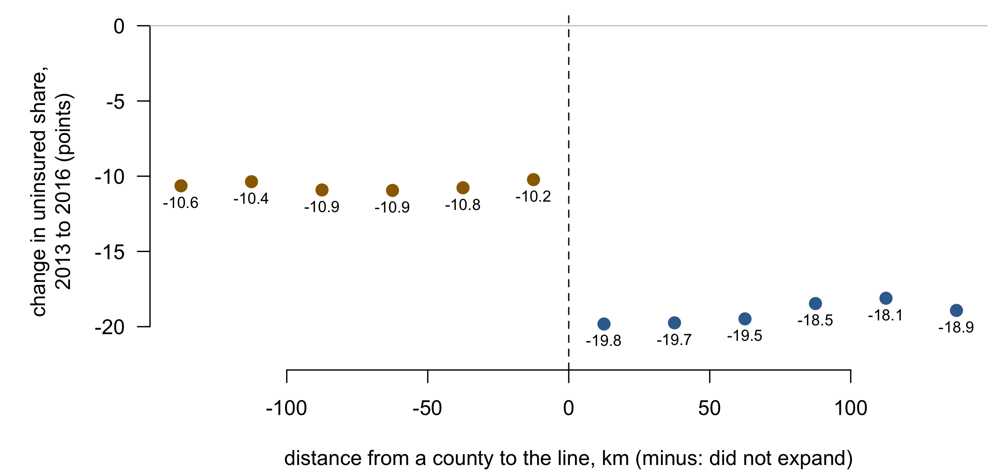
A percentage point is the difference between two percentages. Bands are 25 km wide, out to 150 km each side, with 91 to 141 counties each. SAHIE is model-based: its county estimates are made to sum to state totals, and its inputs include Medicaid records, so part of a step at a state line can come from the model. The R that draws this is on the session page and in the live script.
R Console, in the 23-spatial-vector folder; pp from 'Uninsured share by county and year'
gap <- tapply(pp$pctui_e - pp$pctui_n, pp$year, mean) # expansion county minus its neighbour, mean over pairs
round(gap - gap["2013"], 2) # relative to 2013
#> 2008 2009 2010 2011 2012 2013 2014 2015 2016 2017 2018
#> 0.89 0.92 1.00 -0.36 -0.10 0.00 -7.24 -9.73 -9.78 -10.03 -9.54
yr <- as.numeric(names(gap)); y <- gap - gap["2013"]
par(mar = c(3, 6, 0.5, 0.5), las = 1, bty = "n")
plot(yr, y, type = "b", pch = 16, cex = 1.3, col = "#B31B1B", ylim = c(-11.5, 2), xaxt = "n",
xlab = "", ylab = "pair gap minus its 2013 value\n(percentage points)")
axis(1, at = yr); abline(h = 0, col = "grey60"); abline(v = 2013.5, lty = 2)
text(2013.6, 1.6, "Medicaid expansion, January 2014", adj = 0, cex = 0.8)
text(yr, y, sprintf("%.2f", y), pos = ifelse(yr < 2014, 3, 1), cex = 0.75)The raw gap, before subtracting 2013, is −1.26 in 2008, −2.15 in 2013, −9.38 in 2014 and −11.92 in 2016: expansion counties had slightly fewer uninsured adults even before. A county on two borders sits in several pairs. Boone, Dube, Goodman & Kaplan (AEJ: Economic Policy, 2021) used border county pairs to study extensions of unemployment benefits and found a small, statistically insignificant effect on employment.
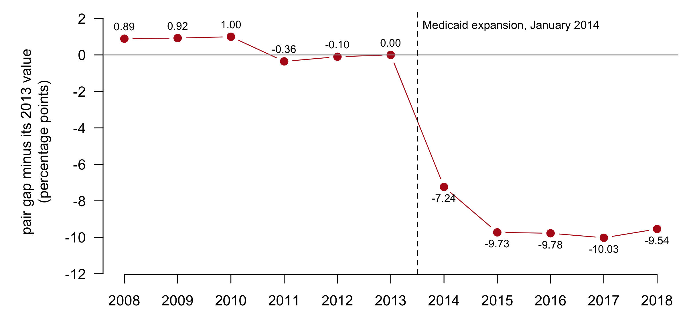
Uninsured share: adults 18-64 at or below 138% of the poverty line without health insurance (Census SAHIE). The pair gap is the expansion county’s share minus its neighbour’s, averaged over the pairs, minus its 2013 value. An event study traces an outcome year by year around a policy’s start, relative to the last year before it. The R that draws this is on the session page and in the live script.
How close to a road forest clearing happens, measured year by year in Cujubim, a municipality in the Brazilian Amazon. It repeats the first step of Asher, Garg & Novosad, the nearest-feature study in Part 3.
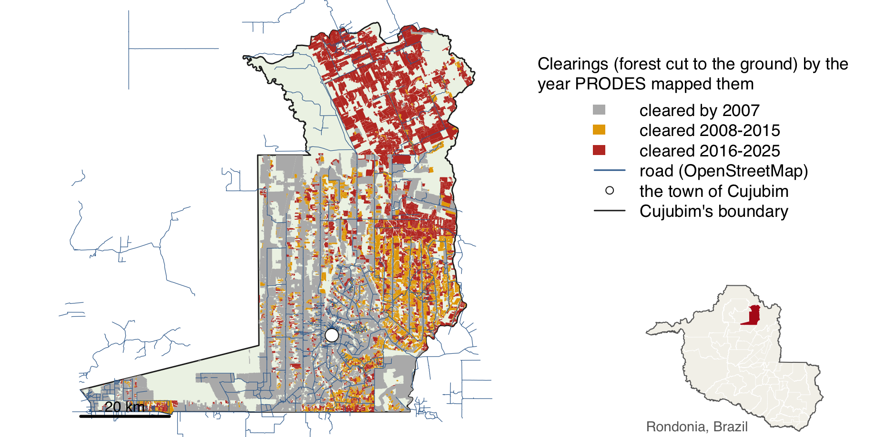
A municipality is Brazil’s unit of local government, like a county. How close to a mapped road does each year’s clearing happen? Clearings: PRODES, INPE (Brazil’s National Institute for Space Research), CC BY-SA 4.0. Roads: © OpenStreetMap contributors, ODbL.
R Console, in the 23-spatial-vector folder; sf loaded; reads data/inpe/
mun <- st_read("data/inpe/municipalities_RO.json", quiet = TRUE) # Rondonia's 52 municipalities
cu <- st_transform(mun[mun$nome == "Cujubim", ], 31980) # nome: name; metres, UTM zone 20S
files <- list.files("data/inpe", "^yearly", full.names = TRUE) # one download in four pages
cl <- do.call(rbind, lapply(files, st_read, quiet = TRUE)) # 6,401 clearings in Cujubim's box
cl <- st_transform(cl[c("year", "area_km")], 31980)
sum(!st_is_valid(cl)) # invalid outlines
#> [1] 764
cl <- st_make_valid(cl) # repair them
round(median(as.numeric(st_area(cl)) / 1e6 / cl$area_km), 4) # area from the shapes over INPE's
#> [1] 0.9991
cl <- st_intersection(cl, st_geometry(cu)) # the parts inside Cujubim
nrow(cl)
#> [1] 4955GeoJSON: a text format for vector data. An invalid outline breaks the rules for a shape, for instance by crossing itself; without the repair the cut stops with “TopologyException”. area_km is INPE’s area for each polygon. A PRODES year runs from August 1 to July 31. EPSG 31980 is SIRGAS 2000, the datum of Brazil’s official maps, with UTM zone 20S, metres in a 6° strip that holds Cujubim; 5070 covers only the United States.
R Console, in the 23-spatial-vector folder; files from the slide before
table(do.call(rbind, lapply(files, st_read, quiet = TRUE))$main_class)
#>
#> desmatamento DESMATAMENTO
#> 4490 1911INPE’s class column spells one class two ways (“desmatamento” is Portuguese for deforestation); the slides keep only the year and the area. After the cut, 11 of the 4,955 rows are points or lines with no area, where a clearing only touches the boundary. INPE’s official annual rate differs from a sum of these polygons: the mapping records clearings larger than 1 ha, the rate counts polygons larger than 6.25 ha and adjusts for cloud cover.
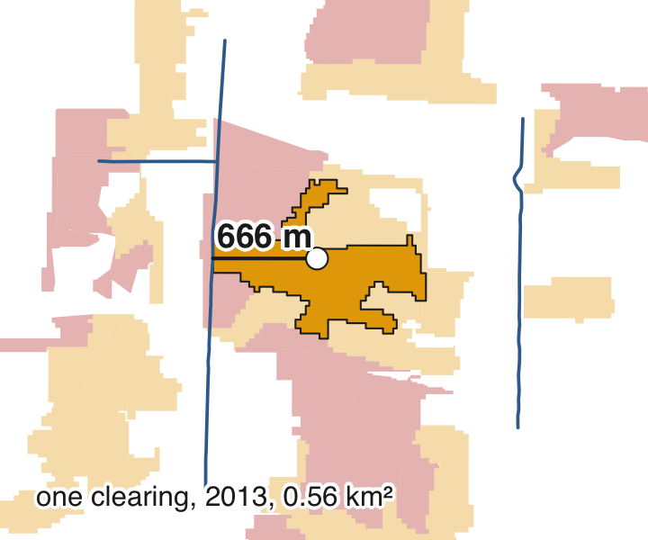
R Console, in the 23-spatial-vector folder; cl from the slide before; reads data_clean/roads_cujubim.gpkg
rd <- st_read("data_clean/roads_cujubim.gpkg", quiet = TRUE) # 1,162 OpenStreetMap roads, metres
pt_cl <- st_point_on_surface(st_geometry(cl)) # one point inside each clearing
nr <- st_nearest_feature(pt_cl, rd) # row of the nearest road
cl$road_m <- as.numeric(st_distance(pt_cl, rd[nr, ], by_element = TRUE)) # metres, one per clearing
period <- cut(cl$year, c(2007, 2012, 2017, 2021, 2025), labels = c("2008-12", "2013-17", "2018-21", "2022-25"))
round(tapply(cl$road_m, period, median))
#> 2008-12 2013-17 2018-21 2022-25
#> 491 664 831 1031OpenStreetMap is a world map drawn by volunteers, free to reuse with credit; I dropped its paths and footways. A centroid can fall outside a curved shape (383 of these clearings), so the distance runs from a point inside. by_element = TRUE gives one distance per clearing in place of a 4,955 by 1,162 table.
code/5_amazon.R builds roads_cujubim.gpkg from the downloaded JSON. Each OpenStreetMap way is a list of longitude and latitude pairs, so a line is a matrix of coordinates:
R Console, in the 23-spatial-vector folder; writes data_clean/roads_cujubim.gpkg
js <- jsonlite::fromJSON("data/osm/roads_cujubim_bbox.json", simplifyVector = FALSE)$elements
ways <- Filter(function(e) e$type == "way", js) # roads; the town is a node
line <- function(e) st_linestring(t(sapply(e$geometry, function(v) c(v$lon, v$lat))))
rd <- st_sf(osm_id = sapply(ways, function(e) e$id), highway = sapply(ways, function(e) e$tags$highway),
geometry = st_sfc(lapply(ways, line), crs = 4326))
rd <- st_transform(rd[!rd$highway %in% c("path", "footway"), ], 31980)
st_write(rd, "data_clean/roads_cujubim.gpkg", delete_dsn = TRUE, quiet = TRUE)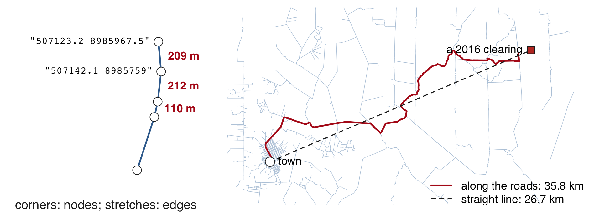
The road network: every corner of every road becomes a node, named by its coordinates, and every stretch between two corners of the same road becomes an edge weighted by its length. Roads join where they share a corner, which is how OpenStreetMap draws junctions.
R Console, in the 23-spatial-vector folder; igraph loaded; rd from the slide before
xy <- st_coordinates(rd) # every corner; L1 = the road it belongs to
key <- paste(round(xy[, "X"], 1), round(xy[, "Y"], 1)) # a name for each point, to 0.1 m
same <- xy[-nrow(xy), "L1"] == xy[-1, "L1"] # is the next corner on the same road?
len <- sqrt(diff(xy[, "X"])^2 + diff(xy[, "Y"])^2) # metres from each corner to the next
ed <- data.frame(from = key[-nrow(xy)][same], to = key[-1][same], weight = len[same])
gr <- graph_from_data_frame(ed, directed = FALSE)
c(nodes = vcount(gr), edges = ecount(gr), components = components(gr)$no)
#> nodes edges components
#> 20767 21148 18
# a node's name is "x y": split it back into two numbers
nodes <- st_as_sf(data.frame(x = as.numeric(sub(" .*", "", V(gr)$name)),
y = as.numeric(sub(".* ", "", V(gr)$name))), coords = c("x", "y"), crs = 31980)A component is a part of the network with no road to the rest; the largest holds 88% of the nodes.
R Console, in the 23-spatial-vector folder; gr and nodes from the live script; cl and pt_cl from the slides before
town <- st_transform(st_as_sf(data.frame(lon = -62.5832107, lat = -9.3687919),
coords = c("lon", "lat"), crs = 4326), 31980) # the town, from OpenStreetMap
town_m <- distances(gr, v = st_nearest_feature(town, nodes))[1, ] # metres along roads, every node
cl$road_km <- town_m[st_nearest_feature(pt_cl, nodes)] / 1000
cl$line_km <- as.numeric(st_distance(pt_cl, town)) / 1000
ok <- is.finite(cl$road_km); sum(ok) # clearings joined by road
#> [1] 4917
round(median(cl$road_km[ok]), 1); round(median(cl$road_km[ok] / cl$line_km[ok]), 2)
#> [1] 35.8
#> [1] 1.38cl: forest clearings in Cujubim, Brazil, mapped from satellite images; pt_cl: a point inside each. gr, built in the live script with igraph: 20,767 road corners as nodes and 21,148 stretches as edges weighted by metres; nodes: the corners as points. The town and each clearing start at their nearest corner. A component is a part of the network with no road to the rest. Road distance is what timber or crops travel to the town.
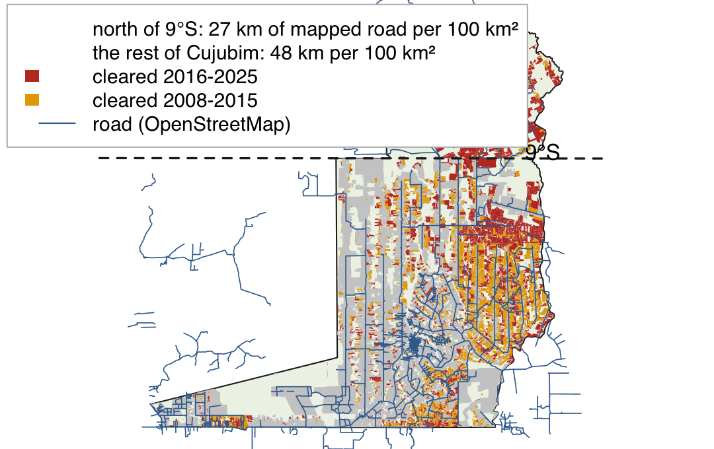
A road map used as a variable needs the date each road was built or mapped. Clearings: PRODES, INPE, CC BY-SA 4.0. Roads: © OpenStreetMap contributors, ODbL.
# Practice. Run in the 23-spatial-vector folder after the slides' code has built
# co, cp, ny, low, nb, g, i, la, states_m, k, pairs, pp, cl, pt_cl, rd, hms_files, day, lev, smoke and dens.
# Counties and their data
# 1. People per km2 for New York's counties: cp$POPESTIMATE2024 / (cp$ALAND / 1e6).
# Which two are densest, which two least dense, and where is Tompkins?
# 2. Compactness, 4 * pi * area / perimeter^2 (1 for a circle), for New York's counties in 5070.
# Which three are least compact, which three most?
# 3. The neighbours' average: for each county in low, the mean 2024 population of its
# neighbours, with sapply(nb, function(j) mean(...)). Compare Tompkins with its six.
# Measuring and routes
# 4. Interstate miles in Pennsylvania, cut as on the Interstate slide. Download the full
# primary-roads file first (tools/fetch_data.R, section 2) and subset RTTYP "I".
# 5. Each New York county's distance to Pennsylvania, from a point inside the county.
# Which three are nearest, which two farthest?
# 6. Every county on some 57-line route from Tompkins to Los Angeles:
# which(distances(g, i) + distances(g, la) == 57).
# The Medicaid border
# 7. The pair gap relative to 2013 for one border at a time: KY-TN, NM-TX, MN-WI.
# 8. The pair gap without the pairs on Wisconsin's border.
# Distance by sea
# 9. The distance from the Port of Los Angeles (-118.27, 33.74) to Shanghai (121.49, 31.23)
# on the round Earth, and as a straight line in Web Mercator (3857). Then a route through
# the water only (the worked example below the solutions).
# Cujubim
# 10. The share of each period's cleared area more than 2 km from a mapped road, and the median
# road distance to town by period against the straight line.
# Smoke
# 11. The number of days in June 2023 each New York county was fully under heavy smoke:
# rowSums(dens == 3) for the rows of low in New York. Which counties had the most?
# 12. The people under heavy smoke on 7 June with a point inside each county (st_intersects(pt, s))
# in place of the whole county (st_within(low, s)). Which rule counts more, and why?# 1. People per km2 in New York
cpny <- cp[cp$STUSPS == "NY", ]
dny <- setNames(cpny$POPESTIMATE2024 / (cpny$ALAND / 1e6), cpny$NAME)
round(c(sort(dny, decreasing = TRUE)[1:2], sort(dny)[1:2], dny["Tompkins"]), 1)
#> New York Kings Hamilton Essex Tompkins
#> 28298.5 14567.9 1.1 7.9 85.9
# 2. Compactness
nym <- st_transform(ny, 5070)
cmp <- setNames(4 * pi * as.numeric(st_area(nym)) / as.numeric(st_length(st_boundary(nym)))^2, nym$NAME)
round(c(sort(cmp)[1:3], sort(cmp, decreasing = TRUE)[1:3], cmp["Tompkins"]), 3)
#> Suffolk Jefferson New York Cortland Orleans Allegany Tompkins
#> 0.169 0.204 0.265 0.766 0.759 0.755 0.526
# 3. The neighbours' average
popl <- pop$POPESTIMATE2024[match(low$GEOID, pop$GEOID)]
nbavg <- sapply(nb, function(j) mean(popl[j]))
round(c(Tompkins = popl[i], neighbours = nbavg[i]))
#> Tompkins neighbours
#> 105602 49829
round(cor(log(popl), log(nbavg), use = "complete.obs"), 2)
#> [1] 0.71
# 5. Distance to Pennsylvania
dpa <- setNames(as.numeric(st_distance(st_point_on_surface(st_geometry(nym)),
states_m[states_m$STUSPS == "PA", ])) / 1e3, nym$NAME)
round(c(sort(dpa)[1:3], sort(dpa, decreasing = TRUE)[1:2], dpa["Tompkins"]), 1)
#> Chemung Broome Tioga Clinton Franklin Tompkins
#> 15.4 19.2 22.3 333.4 297.6 50.9
# 6. Counties on some 57-line route
sum(distances(g, i) + distances(g, la) == 57)
#> [1] 101
# 7. One border at a time
fips <- setNames(states_m$STUSPS, states_m$STATEFP)
pp$border <- paste(fips[substr(pp$GEOID_e, 1, 2)], fips[substr(pp$GEOID_n, 1, 2)], sep = "-")
sapply(c("KY-TN", "NM-TX", "MN-WI"), function(b) {
x <- pp[pp$border == b, ]; g_ <- tapply(x$pctui_e - x$pctui_n, x$year, mean)
round((g_ - g_["2013"])[c("2014", "2016", "2018")], 2) })
#> KY-TN NM-TX MN-WI
#> 2014 -14.06 -4.63 0.16
#> 2016 -15.20 -14.03 1.60
#> 2018 -16.97 -15.06 1.25
# 8. Without Wisconsin
x <- pp[!grepl("WI", pp$border), ]; g_ <- tapply(x$pctui_e - x$pctui_n, x$year, mean)
c(pairs = nrow(x) / 11, round((g_ - g_["2013"])[c("2014", "2016", "2018")], 2))
#> pairs 2014 2016 2018
#> 334.00 -7.93 -10.76 -10.49
# 9. Los Angeles to Shanghai: the round Earth and Web Mercator
ports <- st_as_sf(data.frame(name = c("Los Angeles", "Shanghai"), lon = c(-118.27, 121.49), lat = c(33.74, 31.23)),
coords = c("lon", "lat"), crs = 4326)
round(c(sphere = as.numeric(st_distance(ports[1, ], ports[2, ])) / 1e3,
web_mercator = as.numeric(st_distance(st_transform(ports[1, ], 3857), st_transform(ports[2, ], 3857))) / 1e3))
#> sphere web_mercator
#> 10455 26692
# 10. Cujubim by period
cl$km2 <- as.numeric(st_area(cl)) / 1e6
round(tapply(cl$km2 * (cl$road_m > 2000), period, sum) / tapply(cl$km2, period, sum), 2)
#> 2008-12 2013-17 2018-21 2022-25
#> 0.03 0.08 0.18 0.22
rbind(road = round(tapply(cl$road_km[ok], period[ok], median), 1),
straight = round(tapply(cl$line_km[ok], period[ok], median), 1))
#> 2008-12 2013-17 2018-21 2022-25
#> road 29.4 34.0 45 65.2
#> straight 20.3 24.4 32 49.1
# 11. Heavy-smoke days in New York
hd <- setNames(rowSums(dens == 3)[low$STUSPS == "NY"], low$NAME[low$STUSPS == "NY"])
table(hd); head(sort(hd, decreasing = TRUE), 4)
#> hd
#> 1 2 3 4 5 6 7 8
#> 6 5 17 10 15 6 2 1
#> Niagara Erie Orleans Livingston
#> 8 7 7 6
# 12. A point inside each county against the whole county, 7 June
s7 <- smoke(hms_files[day == as.Date("2023-06-07")])
pt <- st_point_on_surface(st_geometry(low)) # a point inside each county
by_pt <- sapply(st_intersects(pt, s7), function(k) if (length(k)) max(lev[s7$Density[k]]) else 0)
round(c(point = sum(low$pop[by_pt == 3]), whole = sum(low$pop[dens[, "2023-06-07"] == 3])) / 1e6, 1)
#> point whole
#> 109.6 105.7Task 4: 3,931.2 miles of line, with I-76 at 701.0, I-80 at 618.8 and I-81 at 465.5; halve a divided highway’s figure for miles of road. Task 7: Wisconsin shows no gap because it covered adults up to 100% of the poverty line from 2014 under a waiver, without expanding Medicaid. Task 9: the straight line in Web Mercator runs the other way round the world. Task 12: a point inside a county is under a plume whenever the whole county is, and also when the plume covers only part of it, so the point rule counts more people.
A route through the water only (task 9). st_distance() on longitude and latitude measures along the sphere, over land and water alike. A route that stays at sea needs a network of ocean points: here a point every degree that falls in no country of spData’s world map, each joined to its eight neighbours with the great-circle distance as the weight. distances() then works as on the roads. Shipping routes over such networks are the variable in Pascali (AER, 2017).
R Console; installs spData if missing; igraph and sf loaded
want <- c("spData")
need <- want[!(want %in% installed.packages()[,"Package"])]
if (length(need)) install.packages(need)
invisible(lapply(want, function(i) require(i, character.only = TRUE)))
ports <- st_as_sf(data.frame(name = c("Los Angeles", "Shanghai"), lon = c(-118.27, 121.49), lat = c(33.74, 31.23)),
coords = c("lon", "lat"), crs = 4326)
gd <- expand.grid(lon = seq(-179.5, 179.5, 1), lat = seq(-79.5, 84.5, 1)) # a point every degree
oc <- gd[lengths(st_intersects(st_as_sf(gd, coords = c("lon", "lat"), crs = 4326), st_geometry(world))) == 0, ]
oc$id <- seq_len(nrow(oc)); idx <- setNames(oc$id, paste(oc$lon, oc$lat))
ed <- do.call(rbind, lapply(list(c(1, 0), c(0, 1), c(1, 1), c(1, -1)), function(s) { # 8 neighbours, once each
nl <- oc$lon + s[1]; nl[nl > 180] <- nl[nl > 180] - 360 # wrap across 180 degrees
to <- idx[paste(nl, oc$lat + s[2])]; data.frame(from = oc$id[!is.na(to)], to = to[!is.na(to)]) }))
p <- st_as_sf(oc, coords = c("lon", "lat"), crs = 4326)
ed$weight <- as.numeric(st_distance(p[ed$from, ], p[ed$to, ], by_element = TRUE)) / 1e3 # km on the sphere
sea <- graph_from_data_frame(ed, directed = FALSE, vertices = data.frame(name = oc$id))
nn <- st_nearest_feature(ports, p) # each port's nearest ocean point
round(distances(sea, v = as.character(nn[1]), to = as.character(nn[2]))[1, 1]) # km, through the water
#> [1] 11112The water route comes out a few percent longer than the great circle, partly from the grid’s zigzag. A one-degree grid has no Panama Canal, and the land map has no sea ice, so a route from New York to Shanghai on this grid crosses the Arctic Ocean.
County and state outlines: Census Bureau cartographic boundary files, 2024, at 1:500,000. Interstates: Census Bureau TIGER/Line primary roads, 2024. County population: Census Bureau county population estimates 2020-2024. Uninsured shares: Census Bureau Small Area Health Insurance Estimates, 2008-2018. Medicaid expansion dates: KFF State Health Facts, Status of State Action on the Medicaid Expansion Decision, read 2026-11-13 and typed into data_clean/medicaid_expansion.csv. Clearings: PRODES, INPE, through the year that ended July 31, 2025, CC BY-SA 4.0. Roads: © OpenStreetMap contributors, ODbL, downloaded through the Overpass API on 2026-11-13. Smoke: NOAA Hazard Mapping System smoke polygons, June 2023. Fine particles: EPA Air Quality System, daily PM2.5 for 2023 (daily_88101_2023.zip). Friendship links: Meta, Social Connectedness Index between US counties, on the Humanitarian Data Exchange, public domain. The census, health, Brazilian and road files were downloaded on 2026-11-13 and the smoke, fine-particle and friendship files on 2026-11-16, all by tools/fetch_data.R.